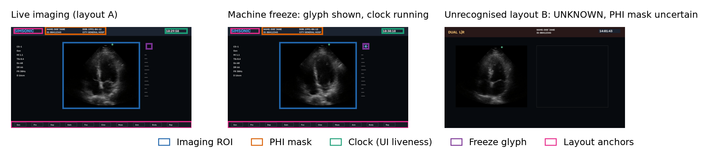

- HDMI/USB capture cards, recorded video, DICOM files
- Every frame re-stamped on the system's own clock; the card's timestamps are never trusted
- Each lost frame counted
Medical imaging · acquisition assistanceRust · replay-firstCode private · showcase
A trustworthy picture first. Guidance second.
Ultrasound Guidance is a layer that sits beside the ultrasound machines hospitals already own. It captures the machine's live video, proves every frame is really live, and only then helps the person holding the probe reach a defined view. The first clinical target is transabdominal pelvic and gynaecological scanning. Today the capture-and-safety foundation is built and tested on recorded video; real hardware is the next step.
332 / 332injected video stalls caught, every one within 250 ms (limit: 1 s)
0false "video lost" alarms in 10.9 hours of normal-use replay
74 / 74torn frames (half old image, half new) kept out of the pipeline
0real capture cards tested so far: all evidence is from replay, and this page says so throughout
The problem
Ultrasound depends on who holds the probe
An ultrasound picture is only as good as the hand that makes it: where the probe sits, how it tilts and rotates, and what settings are on the machine. Where no experienced specialist is present, a scan may be incomplete or never happen. Software that could help already exists for some products, but it is usually tied to one manufacturer's new machines, not the older ones already in service.
There is a second, quieter problem. The only data path every machine shares is its video output, read through a cheap HDMI capture card. Those cards can silently repeat the last frame, drop frames, or report wrong timestamps. Guidance based on a frozen picture is worse than no guidance at all.
The approach
Sit beside the machine; never trust a frame by default
Ultrasound Guidance does not replace or control the ultrasound machine, and it never moves the probe. It reads the video output, checks every frame, and keeps a human in charge.
- Capture from any machine with a video output, a DICOM file or a network stream.
- Prove the picture is live before anything else uses it, and say so on screen when it is not.
- Guide with a small, clinician-approved set of advisory instructions such as "rotate clockwise" or "hold", only when the picture is trusted.
- Fall back safely when anything fails:
AI guidance→rule-based guidance→remote expert→audio only→view only→record only→guidance off
What is built · the capture-and-safety foundation
Four checks between the machine and anything that uses its picture
Every frame passes through the same four stages, whether it comes from a live capture card, a recorded file or a DICOM cine. Only frames that pass are allowed to drive guidance.
- Find the imaging area on a known screen layout
- Mask on-screen patient details
- Reject wrong sizes, black screens and unknown layouts
- Five states: live and moving, live and still, machine frozen, capture stalled, unknown
- Detect new frames vs repeats, and torn frames
- Guidance allowed only after 0.5 s of confirmed live picture
- Recordings with a checksum on every frame
- A tamper-evident, hash-chained event log
- Recordings replay through the same pipeline
Core rule: no single component may fail silently. A failure must be detected, its unsafe output suppressed, the failure shown on screen, a safe state entered, and the event logged.
Where it stands · October 2026
Built and tested on recorded video. Not yet on real hardware.
All results below come from replaying recorded video with faults deliberately injected, plus 10 hours of normal-use replay with fresh random seeds. The recordings are synthetic machine screens built around a public cardiac ultrasound clip, so the content is not pelvic and no real capture card is involved. Every number must be re-measured on real hardware before it means anything clinically.
| Check | Requirement | Result on replay | Status |
|---|---|---|---|
| Video stall detected | ≥ 99% within 1 s | 332 of 332 (100%) | PASS · replay |
| Stall detection time | ≤ 1 s | median 217 ms, worst 250 ms | PASS · replay |
| False "video lost" alarms | ≤ 1 per 8 h | 0 in 10.9 h | PASS · replay |
| Dropped frames reported | none missed | 57 of 57, each counted exactly | PASS · replay |
| Unknown screen layout | no guidance | 100% blocked | PASS · replay |
| Torn frames excluded | report | 74 of 74, 1 false alarm | replay |
| New frames recognised | report | 99.07% found, 99.48% correct | replay |
| Medical image file parser | no crashes | 3,000 corrupted files, 0 crashes | PASS |
| Real capture cards | per-card conformance test | procedure written; no card bought yet | OPEN · needs hardware |
| Screen-to-software delay | ≤ 50 ms (95th percentile) | light-sensor rig designed; not built | OPEN · needs hardware |
| 2 hours on a real machine | phantom only, no patients | protocol written; needs a registered facility | OPEN · needs a collaborator |
| Remote expert, probe tracking, AI | later milestones | designed, not started | NOT STARTED |
How fast each kind of stall is caught
Bar = worst case; label = median. Dashed line = the 1-second limit.
0 ms1,000 ms limit
What changed after the 2 October fixes
Grey = before, blue = after. Two report-only checks were weak; both were fixed and re-tested, including a fresh 10-hour run.
Table view
| Check | Before | After |
|---|---|---|
| Torn frames excluded | 61 / 74 | 74 / 74 |
| New frames recognised | 87.50% | 99.07% |
| Still pictures marked "unknown" (10 h run) | 22.3% | 0.1% |
Does the system agree with the truth?
10-hour normal-use replay, 2.19 million frames; each row is the true state, as a percentage of that row.
| True state ↓ · system says → | Live, moving | Live, still | Frozen | Unknown |
|---|---|---|---|---|
| Live, moving | 99.84 | 0.12 | 0 | 0.04 |
| Live, still | 3.24 | 96.70 | 0 | 0.06 |
| Machine frozen | 0 | 0 | 100 | 0 |
"Live, moving" and "live, still" both allow guidance, so the 3.24% between them is not a safety error. A frozen machine was never mistaken for a live one.
What "frozen" and "stalled" mean
- Machine frozen: the operator pressed freeze. The machine shows a freeze symbol and its on-screen clock keeps running. Safe and expected.
- Capture stalled: the picture stopped updating without the operator knowing, because a cable, card or driver failed. Guidance must stop at once.
- Unknown: the system cannot tell. Guidance stays off, but no alarm is raised.
Telling these apart is the hard part: a stalled capture card often keeps sending the last picture, which looks exactly like a live but still scene.
The test screens
Synthetic machine screens used for replay. Boxes show what the system looks for. The name on screen is a placeholder, not a patient. Image content: a public cardiac test clip from the pydicom-data collection.

Future scope
From a trusted picture to safe guidance, one proven step at a time
Each milestone must pass its own tests before the next one starts. The order is deliberate: the AI comes late, after capture, remote help and tracking are proven, and it always runs behind a deterministic safety supervisor.
- Replay foundation
- Capture, validation, live/frozen detection, recording and audit, all on recorded video
- Done, October 2026
- Live capture
- Real capture cards on 1–2 machines, measured with a light-sensor rig
- Thresholds re-derived from real captures
- Remote expert
- Ultrasound picture + probe camera streamed to a specialist who can talk, point and annotate
- A frozen stream must never look live
- Probe tracking
- Probe position and angle, synchronised with each frame
- Used to build training data; never required at runtime
- View & quality AI
- Recognises the target pelvic view and whether it is technically adequate
- A quality meter and auto-capture, not a diagnosis
- Rule-based copilot
- Deterministic, clinician-approved instructions with abstention
- Runs in shadow mode first
- AI copilot
- Learned from expert-guided scans
- Always behind the safety supervisor; never unconstrained learning on patients
- Cross-brand product
- Many machine brands, offline use, hospital integration, security, signed updates
- External clinical validation
- Clinical modules
- Measurements and decision support, each as a separately validated module
- Only after everything above
How to get there
Four phases, each with a reason to stop
Every phase has a written kill criterion: a result that would end or redirect the project rather than let it drift. India first, under CDSCO medical-device rules, the PCPNDT Act, the Telemedicine Practice Guidelines and the DPDP Act.
Replay foundation (done), live capture on 1–2 machines, a first remote-expert version. Needs bench hardware: capture cards and a light-sensor rig.
Stop if: no stable capture on two capture classes.An OB/GYN clinical collaborator and a regulatory adviser join. A phantom (training dummy) rig and probe tracking.
Stop if: no signed clinical collaborator by month 9.Annotators and ML engineers. Pilot data under ethics approval, the view and quality AI, and the rule-based copilot in shadow mode.
Stop if: the AI misses its accuracy floor for any patient subgroup after two model cycles.A funded team. The AI copilot in shadow mode, a formal clinical investigation, and the cross-brand product.
Regulatory approval decides release, not the team.What is needed next
- Bench hardware: a reference HDMI capture card, two low-cost cards, a splitter, and a light-sensor rig built on two Raspberry Pi Pico boards. No ultrasound machine or patient is involved: a laptop plays a numbered test video into the cards.
- A clinical collaborator: an OB/GYN or radiology department with a registered ultrasound machine, for phantom-only recording sessions. In India an individual cannot lawfully buy an ultrasound machine, so this must go through a registered facility.
- External roles a solo engineer cannot fill: protocol sign-off by clinicians, usability testing, penetration testing and regulatory submissions.
What it will never do
- No fetal-sex inference. It is a prohibited capability, not a disabled feature.
- No diagnosis. The AI judges whether a view is technically adequate, not what it shows.
- No machine control. It never changes machine settings or moves the probe; the operator stays in charge.
- No measurements from uncalibrated pixels. Measurements stay off unless calibration is validated.
- No overstated scope. It assists with defined transabdominal pelvic views; it never claims a complete pelvic examination. Transvaginal scanning is out of scope.
If it succeeds · who it helps
Where the specialist is missing, the machine often is not
India's public health standard lists obstetric and gynaecological ultrasound among the equipment of a rural Community Health Centre (CHC), and expects the obstetrician-gynaecologist there to provide ultrasonography if trained in it. Most rural CHCs do not have that specialist.
74.2%
of the obstetrician-gynaecologist posts needed at India's rural CHCs were unfilled in March 2023: 1,413 in post against 5,491 required, a shortfall of 4,078.1
1 per 1.2 lakh
people: each rural CHC is planned to serve 1,20,000 people in the plains and 80,000 in hilly and tribal areas.2
33–49 crore
people (about 330–490 million) live in the areas the 4,078 missing specialists are meant to serve: 4,078 × 80,000 to 4,078 × 1,20,000.
How the help would reach them
- Remote expert first. One specialist could guide scans at several centres live, instead of patients travelling to a district hospital.
- Existing machines. It works beside machines already installed, so a centre does not need a new device.
- Trained, not replaced. Doctors and nurses scanning under supervision get guidance that also teaches.
- Beyond India. PAHO/WHO notes that ultrasound and X-rays alone can address 80–90% of common diseases and conditions.3
Read these numbers carefully
The 33–49 crore figure is the population served by the missing specialist posts, calculated from planning norms. It is not a count of patients, and not everyone in it needs a pelvic ultrasound. The project would help only after clinical validation and regulatory approval, only for defined transabdominal pelvic views, and only where an operator, a machine and a connection exist. It shows the size of the gap, not a promise.
- Health Dynamics of India (Infrastructure & Human Resources) 2022-23, Ministry of Health & Family Welfare, as reported in ThePrint, 10 September 2024.
- Indian Public Health Standards 2022, Volume II: Community Health Centre, National Health Mission.
- PAHO/WHO, "Radiology services are critical to meeting public health needs", 8 November 2013.
Collaborate
Looking for a clinical partner and bench hardware
If you run an OB/GYN or radiology department with a registered ultrasound machine and could offer phantom-only recording time, or you can help fund the bench hardware, please get in touch through github.com/nabvian.